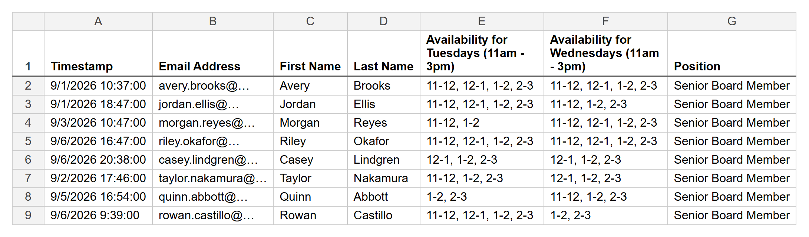
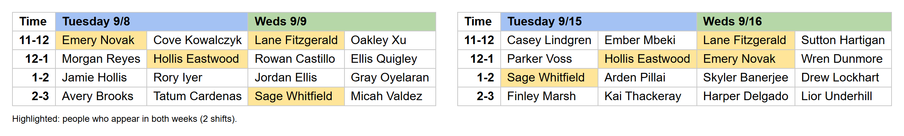
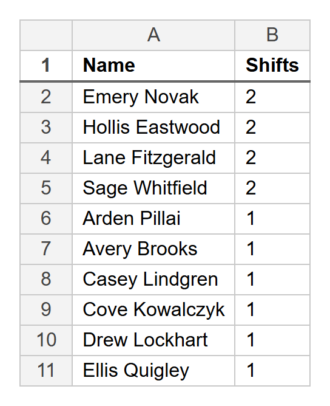
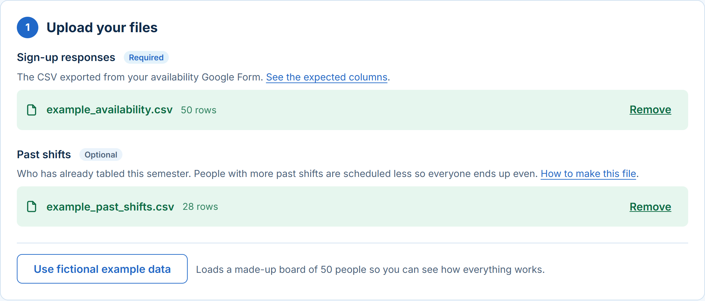
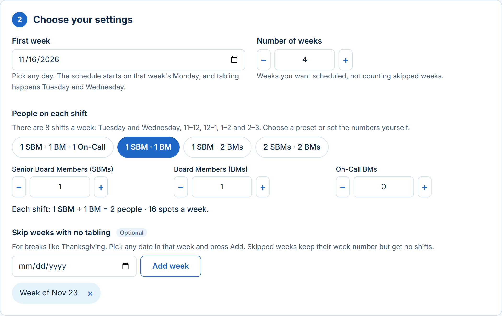
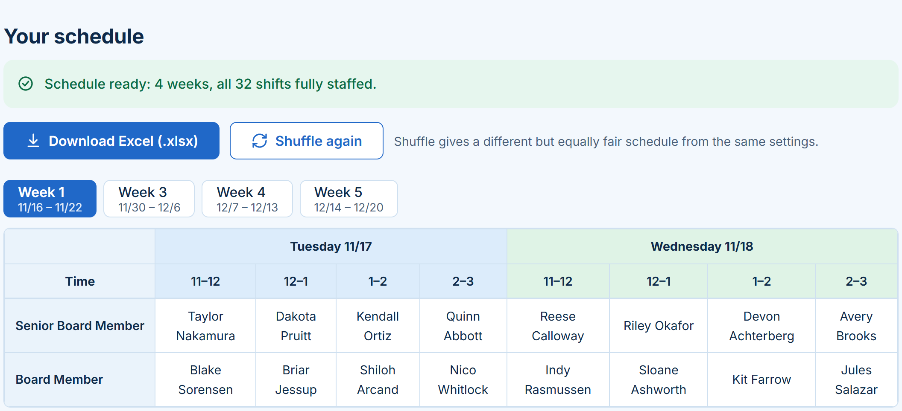
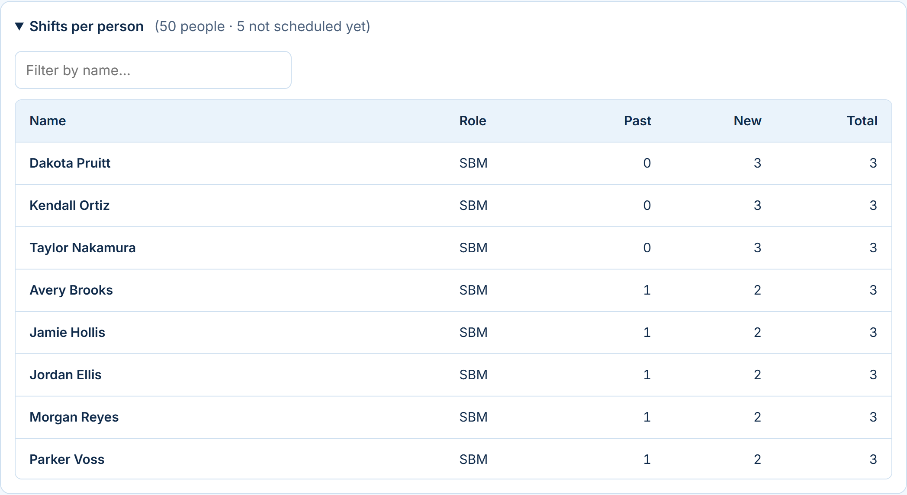

Collect availability
Use a Google Form to ask every board member the same questions. The scheduler needs these fields, and the question titles should match exactly:
- Email Address (turn on Collect email addresses in the form settings)
- First Name and Last Name
- Position, with the choices
Senior Board MemberandBoard Member - Availability for Tuesdays (11am - 3pm) and Availability for Wednesdays (11am - 3pm) as checkboxes, with the choices
11-12,12-1,1-2,2-3
When someone submits twice, the tool keeps their most recent response.

Export it as a CSV
- Open the linked Form Responses sheet in Google Sheets.
- Choose File → Download → Comma-separated values (.csv).
- Keep the file somewhere you can find it. You'll upload it in step 4.
Tip. You don't need to edit the CSV. Extra columns are ignored and duplicate sign-ups are handled for you.
Record past shifts Optional, but recommended mid-semester
If you've already tabled for a few weeks, tell the tool who worked so it can even things out. Count how many shifts each person has worked in your earlier weekly sheets, then write them in a two-column CSV.


Name and Shifts. Only list people who've worked at least once.Spell names the way they appear in the sign-up form (first name, a space, last name). If a name doesn't match, the tool tells you which ones it skipped. You can fix them and run it again.
Download the example past shifts file to copy the format.
Upload & choose settings
Open the Generate tab. Choose your sign-up CSV, add the past shifts file if you have one, then set the schedule.


- First week
- Any date in the week you want to start. The schedule uses that week's Monday.
- People on each shift
- Use a preset or set the numbers. SBMs are picked only from Senior Board Members. BMs and On-Call are picked only from Board Members. The on-call person is who the table covers if someone can't make it.
- Skip weeks
- Add any date in a week with no tabling. That week is left out and doesn't count toward your number of weeks.
Generate & check
Press Generate schedule. In a few seconds you'll see a preview that matches the Excel layout, with one tab per week.

- A green banner means every spot is filled. An amber banner lists how many are Unfilled, usually because nobody eligible was free.
- Open Shifts per person to confirm the load is even and see who isn't scheduled yet.
- Not happy with the result? Press Shuffle again for another fair schedule.

Download & share
Press Download Excel (.xlsx). The workbook has one sheet per week using the UMSBC template, including the reminder notes at the bottom. Open it in Excel or upload it to Google Drive to share with the board.
Keep your records. After the weeks go by, add the new shifts to your past shifts file so next time starts from an accurate count.
Tips for each week
- Nobody works two weeks in a row. A skipped break week counts as a gap, so someone can work the week before and after it.
- Fewer people than spots? Lower the people per shift, or ask more people to submit availability.
- Something changed mid-semester? Update the CSV (or past shifts) and generate again.